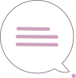
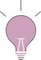
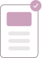
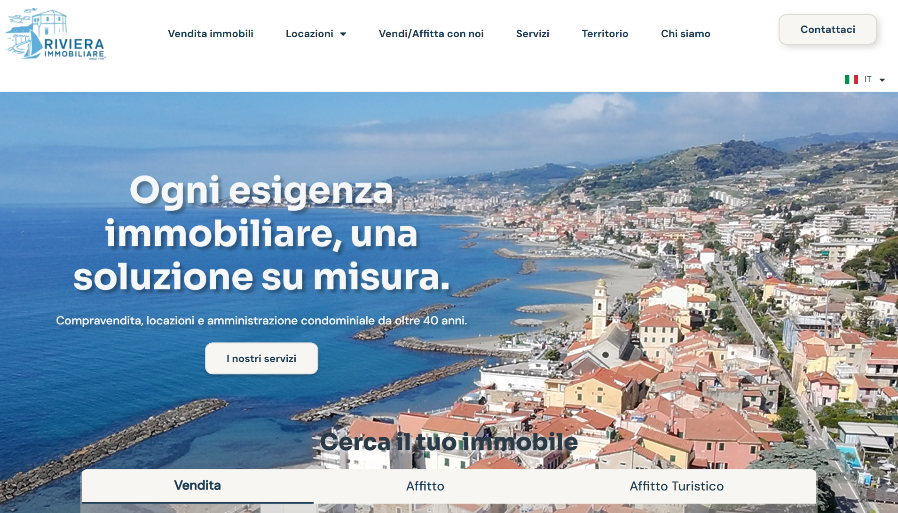

01
Ascolto
Comprendo cliente, settore e pubblico con briefing e analisi dei competitor.


Dopo sette anni a contatto con le persone ho imparato ad ascoltarle davvero. Oggi trasformo quell'ascolto in interfacce chiare e accessibili, che progetto e realizzo anche in codice con WordPress e HTML/CSS per esperienze digitali semplici da usare.
I miei progetti Il mio curriculum
logo design
web design
brand identity
ux-ui design
wordpress
logo design
web design
brand identity
ux-ui design
wordpress
Ogni progetto parte dall'ascolto e cresce insieme al cliente. Lo coinvolgo in ogni fase con briefing continui, così le scelte di design restano allineate ai suoi gusti, alle sue esigenze. Che si tratti di un sito, di un logo o di un'identità visiva, lavoro sempre allo stesso modo: parto dall'ascolto e costruisco ogni passo insieme al cliente, per arrivare a un risultato che rispecchia davvero le sue esigenze e quelle del suo pubblico.
01
Comprendo cliente, settore e pubblico con briefing e analisi dei competitor.

02
Presento più proposte tra cui scegliere e le sviluppo passo dopo passo.

03
Rifinisco con il feedback del cliente e consegno dopo una revisione finale.


Ecco come ho applicato questo approccio al sito di un'agenzia immobiliare, che aveva un design datato, anonimo e poco funzionale. Dopo aver ascoltato il cliente e analizzato competitor e pubblico, ho proposto diverse soluzioni e condiviso il design a ogni passaggio. Il risultato è un sito moderno e più funzionale, approvato insieme prima di andare online.
Progetto esperienze digitali semplici da usare, dall'idea fino alla pubblicazione.
Progettazione UX/UI
Wireframe, prototipi e interfacce chiare, pensate per essere accessibili a tutti.
Identità visiva
Loghi, colori e linee guida per un brand coerente e riconoscibile.
Contenuti
Testi e immagini che comunicano il brand con la stessa voce.
Sviluppo web
Realizzo siti con WordPress ed Elementor. HTML e CSS sono competenze in crescita, che sto approfondendo.
AI come alleata
La uso per ricerche, immagini e per risolvere ciò che ancora non so fare, come un collega in più.